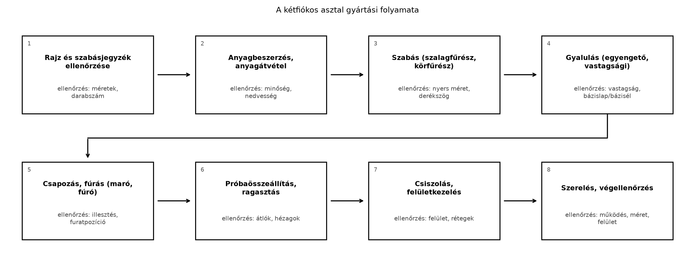

Egy megrendelő kétfiókos asztalt rendel, határidőre. A rajz és a szabásjegyzék elkészült, de a gyártás előtt meg kell válaszolni: milyen sorrendben dolgozzuk fel az alkatrészeket? Melyik gépet használjuk? Mennyi időt vesz igénybe? Mennyibe kerül a munka? Ha ezeket nem tervezzük meg előre, a műhelyben anyaghiány, géptorlódás, kapkodás és késés lesz. A gyártástervezés éppen ezt előzi meg: a rajztól a kész termékig minden lépést átgondolunk, számszerűsítünk és ütemezünk.
Képzelj el egy kis asztalosműhelyt. A raktárból a bútorlap a lapszabászgéphez kerül, onnan az éllezáróhoz, majd a sorozatfúróhoz, végül a szerelőasztalra. A tömörfa lábak a szalagfűrészhez, az egyengető- és vastagsági gyalugéphez, majd a marógéphez és a hosszlyukfúróhoz vándorolnak. Ha az anyagáramlás jól tervezett, minden darab egyszer halad végig a műhelyen, nem keresztezi a másik alkatrész útját, és minden gépnél pontosan akkor van, amikor szükség van rá.
Az alábbi folyamatábra a kétfiókos asztal gyártásának főbb lépéseit mutatja. A dobozok műveletek, a nyilak az anyag haladási irányát jelölik. Az ellenőrzési pontokat minden doboz alsó sorában külön kiemeljük, mert a gyártástervezésben ezek megakadályozzák, hogy a hibás darab továbbmenjen.

Definíció. A gyártástervezés a termék előállításához szükséges műveletek, gépek, szerszámok, anyagok, idő- és költségigények előzetes meghatározása és ütemezése. Célja, hogy a gyártás zökkenőmentesen, határidőre és gazdaságosan valósuljon meg.
Definíció. A műveletterv a gyártási műveletek sorrendjét, gépeit, szerszámait, beállítási adatait, anyagait és időadatait tartalmazó dokumentum. Egy-egy művelethez tartozhat technológiai lap, amely a részletes, biztonsági előírásokkal ellátott eljárást írja le.
Definíció. Az időnorma az adott művelet elvégzéséhez szükséges idő, amely tartalmazza az előkészületi időt, a gépi időt, a kézi időt és a veszteségidőt. Az időnorma a gyártástervezés és az árkalkuláció alapja.
Definíció. Az ütemezés a műveletek időbeli elrendezése, az erőforrások (gépek, emberek, anyagok) hozzárendelése a határidőhöz. Egyszerű esetben Gantt-diagrammal ábrázoljuk.
Szabály. A gyártástervezés során a rajzból, a szabásjegyzékből és a műszaki leírásból indulunk ki. A műveletsor a bázislap–bázisél rendszerre épül: először egy sík és egy derékszögű él kialakítása, majd a méretre munkálás, végül a felületi műveletek. A csiszolás mindig a gépi megmunkálás után következik. A művelettervet a korábban tanult Műszaki leírás, műveletterv, technológiai leírás és gyártási folyamatábra alfejezetben ismertetett módon készítjük, és a Korpuszbútorok és tároló bútorok gyártástechnológiája, valamint a Egy- és kétfiókos asztal szerkezeti rajza és gyártástechnológiája alfejezetekben bemutatott lépéseket foglalja egységes keretbe.
A gyártástervezés receptje, amelyet minden terméknél érdemes követni:
Továbbvitt eredmény. A gyártásterv és az időnorma az árkalkuláció (Költségek és önköltség: anyag-, bér-, általános költség, elő- és utókalkuláció) és a vizsgaremek (Vizsgaremek és gyakorlati vizsgafeladat: tervezés, dokumentáció, értékelés) dokumentációjának alapja.
Vegyünk egy kétfiókos asztalt, amelynek fő alkatrészei:
A fordulatszámok ellenőrzéséhez használd a forgácsolási sebesség képletét (), lásd az Asztalos marógép (alsómaró): profilmarás, díszlécek, sablon szerinti marás alfejezetet. A műveletterv részletét az alábbi táblázat mutatja. Az adatok tájékoztató jellegűek, műhelyenként és géptípusonként változhatnak.
| Sorszám | Művelet | Gép / szerszám | Beállítási adatok (tájékoztató) | Ellenőrzés |
|---|---|---|---|---|
| 10 | Szabás darabolása | Asztalos szalagfűrészgép | szélesebb (pl. 15–25 mm) szalag, a szalagsebesség a gépkönyv szerint (ellenőrizendő) | Hossz + 10 mm ráhagyás |
| 20 | Szélezés, szélesbítés | Asztalos körfűrészgép | 250 mm-es hasító fűrészlap, kevesebb foggal (ellenőrizendő: szerszámgyártói adat), hasítóék beállítva | Derékszög, méret |
| 30 | Gyalulás (egyengető és vastagsági) | Egyengető gyalugép + vastagsági gyalugép | Késkiemelkedés 0,5–1 mm (ellenőrizendő), fogás 2 mm | Bázislap, bázisél, vastagság |
| 40 | Csapozás, fészkelés | Asztalos marógép + hosszlyukfúró | Csapozó szerszám az alsó marógépen (Ø180–250 mm, fordulatszám a szerszámon jelölt maximum alatt); fészek hosszlyukfúróval Ø10 mm, ~6000–9000 1/min (ellenőrizendő: gépkönyv/szerszámjelölés) | Csaphossz, fészekmélység, illesztés |
| 50 | Fiókoldal fogazása | Fecskefarkú fogazó sablon + felsőmarógép | 12 mm-es maró, sablon szerint | Fogazás illeszkedése |
| 60 | Próbaösszeállítás | Kézi, szorítók | – | Derékszög, átlók |
| 70 | Ragasztás, préselés | Szorítók, prés | D3 ragasztó, préselési idő a gyártó szerint | Ragasztó kinyomódása, illesztés |
| 80 | Csiszolás | Excenter csiszológép, kézi csiszoló | P120–P180–P240 szemcse (ellenőrizendő) | Sima felület, élek letörve |
| 90 | Felületkezelés | Szórópisztoly | Alapozó, közbenső csiszolás, fedőlakk (gyártói adatlap) | Rétegvastagság, száradás |
| 100 | Vasalatok szerelése | Csavarozó, kézi | Fúróátmérő a csavarhoz | Működő fiók, laza illesztés |
Gépbiztonság. A fenti műveletek betanított, felügyelt tanulónak szólnak. Minden gépen kötelező a géphez tartozó védőberendezés (burkolat, körfűrésznél hasítóék), a tolófa/toló-eszköz és az elszívás használata. Védőberendezés nélkül, egyedül, fáradtan ne dolgozz! A gépek indítás előtti ellenőrzését, a szerszámcserét és a beállítást a gépkönyv szerint, áramtalanítás után végezd. A kézi előtolású marógépnél tilos az egyenirányú (szinkron) marás: a munkadarabot mindig a szerszám forgásával szemben told (ellenirányú marás), és mindig használj tolólécet, ha a kéz közel kerülne a szerszámhoz. A fapor ellen elszívást és FFP2/FFP3 légzésvédőt használj.
Az időnorma három fő összetevőből áll:
A darabidő egy alkatrészre:
ahol a sorozatnagyság (hány azonos alkatrészt gyártunk). A műveleti idő a darabidő és a veszteségidő összege:
ahol a pihenési, anyagellátási és egyéb veszteség százalékos aránya (pl. 10–15 %, tájékoztató). A munkaóra-becslésnél a műveletek időnormáit összegezzük.
Számítási példa 1: lapszabászgép időnormája
Egy 18 mm vastag bútorlapot 900 mm hosszú, 600 mm széles méretre vágunk. A gép előtolása 8 m/min, a vágáshossz összesen 2 × (900 + 600) = 3000 mm = 3,0 m. A gépi idő:
A kézi idő (anyag adagolása, megfordítás, leemelés) tapasztalati érték: 0,4 perc. Az előkészületi idő (ütközőállítás, szerszámellenőrzés) 8 perc, sorozatnagyság db. Ekkor:
Veszteség 12 %:
Egy darab lapszabási időnormája tehát kb. 1,8 perc.
Számítási példa 2: fúrási időnorma
A korpusz oldallapjába 4 sor furatot fúrunk, soronként 8 furattal, összesen 32 furat. A sorozatfúró (többorsós fúrógép) egy löketben egy sor 8 furatát fúrja, ezért 4 sor = 4 löket. A gép előtolása 0,1 m/min (tájékoztató, ellenőrizendő: gépkönyv), a furatmélység 13 mm, a szerszám be- és kiemelkedése 20 mm. Egy löket ciklusideje:
A gépi idő 4 lökettel: . A kézi idő a lap behelyezése és kivétele: 0,8 min. Előkészületi idő (ütközők, szerszám) 15 perc, lap. Darabidő:
Veszteség 10 %-kal: . Ez a fúrási művelet időnormája egy oldallapra.
A munkaóra-becslés a gyártási műveletek időnormáinak összegzése. A kétfiókos asztalhoz az alábbi becslést készítjük (tájékoztató értékek, egyedi gyártás, 1 db):
| Művelet | Időnorma (perc) |
|---|---|
| Szabás, darabolás | 25 |
| Gyalulás, méretre munkálás | 40 |
| Csapozás, fészkelés | 60 |
| Fiókgyártás (fogazás, összeállítás) | 55 |
| Próbaösszeállítás, igazítás | 30 |
| Ragasztás, préselés (várakozás nélkül) | 45 |
| Csiszolás | 50 |
| Felületkezelés (alapozó, fedőlakk) | 40 |
| Vasalatszerelés, végellenőrzés | 30 |
| Összesen | 375 perc = 6,25 óra |
Az órabér legyen mintaár: 5 500 Ft/óra (ellenőrizendő: a tényleges bérköltséget a munkaszerződés, a munkabér és a járulékok határozzák meg). Bérköltség:
Bérjárulék (13 % szociális hozzájárulási adó, ellenőrizendő): , kerekítve 4 469 Ft. A közvetlen bérköltség 38 844 Ft.
A költségszámítás az anyagköltséget és a bérköltséget összegzi. A mintaárakat jelöljük.
| Tétel | Mennyiség | Egység | Egységár (Ft) | Érték (Ft) |
|---|---|---|---|---|
| Tölgy fűrészáru | 0,085 m³ | m³ | 280 000 | 23 800 |
| Bútorlap (fiókfenék) | 0,3 m² | m² | 8 500 | 2 550 |
| Ragasztó (D3) | 0,2 kg | kg | 3 800 | 760 |
| Fiókcsúszó | 2 pár | pár | 3 200 | 6 400 |
| Fogantyú | 2 db | db | 1 200 | 2 400 |
| Felületkezelő anyag | 0,5 l | l | 9 000 | 4 500 |
| Csiszolóanyag | 1 készlet | készlet | 1 500 | 1 500 |
| Anyagköltség összesen | 41 910 | |||
| Bérköltség (járulékkal) | 6,25 óra | óra | 6 215 | 38 844 |
| Közvetlen költség | 80 754 | |||
| Rezsi (általános költség, 20 %) | 16 151 | |||
| Önköltség | 96 905 | |||
| Nyereség (15 %) | 14 536 | |||
| Nettó termelési ár | 111 441 | |||
| ÁFA (27 %, ellenőrizendő) | 30 089 | |||
| Bruttó ár | 141 530 |
Megjegyzés. A számítás szemlélteti a gyártástervből származó idő- és anyagadatok felhasználását az árkalkulációban. Az értékek mintaárak, a valós árajánlatot a Árajánlat készítése: termelési ár, ÁFA, kiszámlázott ár alfejezetben tanuljuk.
Az ütemezés célja, hogy a műveletek időben egymás után következzenek, és a határidő tartható legyen. A Gantt-diagramon az egyes műveletek vízszintes sávként jelennek meg, kezdési és befejezési idővel.
A kétfiókos asztal gyártása 3 munkanap alatt, napi 8 órával ütemezve. A sávhosszak a munkaóra-becslés időnormái (perc); a préselési és száradási várakozás nem munkaidő, ezért a 3 nap a várakozások miatt kell, a munkaidő összesen 375 perc = 6,25 óra:
| Nap | Művelet | Kezdés (perc a nap kezdetétől) | Befejezés (perc) | Munkaidő (perc) |
|---|---|---|---|---|
| 1. nap | Szabás, darabolás | 0 | 25 | 25 |
| 1. nap | Gyalulás, méretre munkálás | 25 | 65 | 40 |
| 1. nap | Csapozás, fészkelés | 65 | 125 | 60 |
| 1. nap | Fiókgyártás | 125 | 180 | 55 |
| 2. nap | Próbaösszeállítás, igazítás | 0 | 30 | 30 |
| 2. nap | Ragasztás, préselés (műveleti idő) | 30 | 75 | 45 |
| 2. nap | Préselési idő (várakozás) | 75 | 480 | – |
| 3. nap | Csiszolás | 0 | 50 | 50 |
| 3. nap | Felületkezelés | 50 | 90 | 40 |
| 3. nap | Száradás (várakozás) | 90 | 420 | – |
| 3. nap | Vasalatszerelés, végellenőrzés | 420 | 450 | 30 |
| Összesen | 375 |
A préselési idő alatt a dolgozó más feladatot végezhet, ezért a ragasztási művelet időnormája csak a műveleti időt tartalmazza, a kötési időt nem.
Az ábra sávhosszai a munkaóra-becslés időnormái; így a munkaidő és a bérköltség ugyanabból az óraszámból adódik (6,25 óra × 5 500 Ft/óra = 34 375 Ft). A várakozás (préselés, száradás) sraffozott sáv: ilyenkor a dolgozó más munkát végezhet. A HTML-kiadásban az időnormák és az órabér csúszkával módosíthatók.
A gyártástervezés kisüzemben és nagyüzemben eltérő hangsúlyokat kap.
Kisüzemi (műhelyi, egyedi) gyártás: - A sorozatnagyság kicsi (1–10 db). - A kézi műveletek aránya magas, a gépek univerzálisak. - Az előkészületi idő egyszer merül fel, de kis darabszámra oszlik, ezért a fajlagos idő nagy. - A műveletterv rugalmas, gyakran a szakember fejében vagy kézzel írt lapon él. - Az anyagáramlás egyszerű, a gépek műhelyben rögzített helyen vannak.
Nagyüzemi (sorozat) gyártás: - A sorozatnagyság nagy (100–1000 db). - A gépek specializáltak, gyakran gépsorba kötöttek (pl. lapszabászgép + éllezáró + sorozatfúró összekapcsolva). - A beállítási idő nagy, de nagy darabszámra oszlik el, így a fajlagos idő kicsi. - Az anyagáramlás folyamatos, a raktár és a gépek közötti anyagmozgatást görgősor vagy szállítószalag végzi. - A műveletterv szabványos, a gyártásközi ellenőrzés statisztikai.
Példa az összehasonlításra. Ugyanaz a fúrási művelet (32 furat oldallapon) kisüzemben egyorsós fúrógéppel, sablonnal soronként egyenként fúrva kb. 13 perc/lap (32 furat × 0,33 min + kézi és előkészületi idő), többorsós sorozatfúróval kb. 3,2 perc/lap, nagyüzemben a CNC megmunkálóközpontban hasonló vagy kisebb idő lehet (tájékoztató, a gép típusától függően). A nagyüzemi gyártás órabére egy munkaórára vetítve alacsonyabb lehet, de a gépsor beruházási költsége magas, ezért a sorozatnagyság dönt.
Az anyagáramlás a nyersanyag útját jelenti a raktártól a kész termékig. Jó elrendezésnél nincs kereszteződés, visszafordulás, és a távolságok rövidek.
A kétfiókos asztal gyártásánál az anyagáramlás:
Az ellenőrzési pontok a gyártástervezésben rögzített helyeken vannak: - Bejövő anyag ellenőrzése (nedvesség, méret, hiba). - Szabás után a nyers méret és a derékszög ellenőrzése. - Gyalulás után a vastagság és a bázislap/bázisél ellenőrzése. - Csapozás és fúrás után a kötések és furatpozíciók ellenőrzése. - Próbaösszeállításnál az átlók és a hézagok ellenőrzése. - Végellenőrzésnél a felület, a vasalatok működése és a méretek.
A gyártásterv minőségellenőrzési pontjait a gyártásközi ellenőrző lap rögzíti. A kétfiókos asztalnál az alábbi szempontokat mérjük, tájékoztató tűrésekkel:
Eltérés esetén a hibás alkatrészt félre kell tenni, és a terv szerint javítani vagy újra gyártani. A gyártásközi ellenőrzés megakadályozza, hogy a hiba a következő műveletbe kerüljön.
1. Hiba: Hiányos szabásjegyzék miatt anyaghiány. A gyártás közben kiderül, hogy egy alkatrész kimaradt, vagy a hulladékot alulbecsülték. Ok: a rajz nem teljes, a szabásjegyzéket nem ellenőrizték. Helyes gyakorlat: a gyártástervezés első lépése a rajz és a jegyzék egyeztetése.
2. Hiba: Rossz gépválasztás. Tömörfa alkatrészt közvetlenül lapszabászgépen vágnak, ami nem megfelelő élminőséget ad, vagy a gép nem alkalmas a műveletre. Ok: a művelettervből hiányzik a gép és a szerszám pontos megjelölése. Helyes gyakorlat: minden művelethez a technológiának megfelelő gépet választani.
3. Hiba: Alulbecsült időnorma. A gyártás tovább tart, mint tervezték, ezért késik a szállítás, vagy túlórázni kell. Ok: a veszteségidőt nem számolták, vagy a sorozatnagyságot rosszul becsülték. Helyes gyakorlat: az időnormához mindig hozzáadni a 10–15 % veszteséget, és próbagyártással ellenőrizni a becslést.
4. Hiba: Anyagáramlás keresztezése. A műhelyben a munkadarabok oda-vissza járnak, mert a gépek sorrendje nem a technológiai sorrendet követi. Ok: a műhely elrendezése nincs összhangban a gyártástervvel. Helyes gyakorlat: a gép elrendezése a domináns gyártási irányt kövesse.
5. Hiba: Hiányzó ellenőrzési pont. A hibás méretű alkatrész továbbmegy a következő műveletbe, és csak a végellenőrzésnél derül ki, amikor már nem szerelhető össze. Ok: a gyártástervben nincs gyártásközi ellenőrzés. Helyes gyakorlat: minden kritikus művelet után mérés és dokumentálás.
Egy kis asztalosműhelyben egy konyhabútor-sorozatot gyártottak. A rajzok elkészültek, de a művelettervet nem készítették el írásban. A szabászatnál kiderült, hogy a bútorlapokból hiányzik a hátfalak anyaga, mert a szabásjegyzékben nem szerepelt. A pótlás két napot vett igénybe, a szerelőt le kellett mondani, a vevő pedig kötbért kért. A tanulság: a gyártástervezés nem felesleges papírmunka, hanem a határidő és a költség betartásának eszköze. Ezt követően a műhely minden megrendeléshez művelettervet és időnormát készített, és a gyártásközi ellenőrzéseket is bevezette. A késések és a reklamációk száma jelentősen csökkent.
1. Kérdés. Igaz-e: az időnorma csak a gépi időt tartalmazza? (Indokold!)
2. Kérdés. Mi a különbség a műveletterv és a technológiai lap között?
3. Kérdés. Egy lapszabászgépnél a vágáshossz 4,2 m, az előtolás 7 m/min. Mennyi a gépi idő?
4. Kérdés. Miért fontos a bázislap–bázisél rendszer a gyártástervezésben?
5. Kérdés. Milyen ellenőrzési pontot jelölnél ki a fúrási művelet után?
6. Kérdés. Mi történik, ha a veszteségidőt elhagyjuk az időnormából?
1. feladat (A) Határozd meg a gyártástervezés fogalmát, és sorold fel a műveletterv fő tartalmi elemeit!
2. feladat (A) Egy művelet előkészületi ideje 12 perc, a gépi idő 0,6 perc, a kézi idő 0,5 perc. A sorozatnagyság 15 db. Számítsd ki a darabidőt, ha a veszteség 10 %.
3. feladat (B) A kétfiókos asztalhoz készítsd el a szabásjegyzék alapján a műveletsort a lábak elkészítésére, a gépek megnevezésével és a beállítási adatokkal (tájékoztató értékekkel).
4. feladat (B) Egy ajtólap gyártásánál a következő időket mérték: szabás 4 perc, éllezárás 3 perc, fúrás 6 perc, szerelés 5 perc. A veszteség 12 %. Mennyi az összes időnorma, ha 4 azonos ajtót gyártunk, és az előkészületi idő összesen 20 perc?
5. feladat (C) Tervezd meg egy kisüzemi és egy nagyüzemi gyártás folyamatát ugyanarra a polcos szekrényre. Hasonlítsd össze a gépválasztást, az időnormát és az anyagáramlást! Melyiknél lesz alacsonyabb a fajlagos bérköltség, és miért?
6. feladat (D) Készítsd el egy általad választott bútor (pl. éjjeliszekrény) teljes gyártástervét: rajzvázlat (szöveges leírás), szabásjegyzék, műveletterv, időnorma becslés, egyszerű Gantt-ütemezés és anyagköltség-számítás mintaárakkal.
Önellenőrzés – válaszok
1. feladat. A gyártástervezés a termék előállításához szükséges műveletek, gépek, szerszámok, anyagok, idő- és költségigények előzetes meghatározása és ütemezése. A műveletterv fő tartalmi elemei: művelet sorszáma, megnevezése, gépe, szerszáma, beállítási adatai, anyaga, időnormája, ellenőrzési pontja.
2. feladat.
.
.
3. feladat. A lábak műveletsora:
- Darabolás szalagfűrészgépen: nyers méret kb. 75×75×770 mm (oldalanként
kb. 2,5 mm vastagsági és kb. 20 mm hosszráhagyás).
- Egyengető gyalugépen bázislap kialakítása, majd a bázisél erre
derékszögben gyalulva.
- Vastagsági gyalugépen vastagság 70 mm-re.
- Hosszra vágás körfűrészen 750 mm.
- Csapozás és fészkelés marógéppel/hosszlyukfúróval.
- Csiszolás.
4. feladat.
A műveletenkénti idő összesen:
.
Előkészületi idő elosztva:
.
Darabidő:
.
Veszteséggel:
per ajtó. Négy ajtóra:
.
5. feladat. Kisüzemben univerzális gépekkel (lapszabászgép, kézi éllezáró, kézi fúró), magas kézi munkaaránnyal, rugalmasan. Nagyüzemben gépsorral (CNC, automata éllezáró, sorozatfúró), alacsonyabb fajlagos idővel, de magas beruházási költséggel. A fajlagos bérköltség nagyüzemben alacsonyabb, mert az időnorma kisebb és a sorozatnagyság nagy.
6. feladat. A megoldás egyéni, de ellenőrizni kell: a rajz leírása, a szabásjegyzék oszlopai, a műveletterv sorrendje, az időnorma számítása, a Gantt-táblázat és a költségszámítás.
A gyártástervezés a rajztól a kész termékig tartó folyamat előzetes meghatározása. Először a rajzot és a szabásjegyzéket ellenőrizzük, majd anyagbeszerzést tervezünk, meghatározzuk a műveletsort, kiválasztjuk a gépeket és a szerszámokat, beállítási adatokat rögzítünk. Az időnorma az előkészületi, gépi és kézi idő összege, veszteségidővel növelve: , és . A munkaóra-becslés a műveletek időnormáinak összegzéséből adódik. Az ütemezés Gantt-diagrammal mutatja a műveletek időbeli rendjét. A kisüzem és a nagyüzem a sorozatnagyságban, a gépválasztásban és a fajlagos költségben tér el. A gyártástervben ellenőrzési pontokat jelölünk ki, hogy a hibákat korán észrevegyük. Továbbvitt eredmény. A gyártásterv és az időnorma az árkalkuláció (Költségek és önköltség: anyag-, bér-, általános költség, elő- és utókalkuláció) és a vizsgaremek (Vizsgaremek és gyakorlati vizsgafeladat: tervezés, dokumentáció, értékelés) dokumentációjának alapja.
Felhasznált forrástípusok: faipari technológiai és gyártástervezési szakkönyvek; a könyv korábbi alfejezetei, különösen a Műszaki leírás, műveletterv, technológiai leírás és gyártási folyamatábra, a Korpuszbútorok és tároló bútorok gyártástechnológiája és a Egy- és kétfiókos asztal szerkezeti rajza és gyártástechnológiája; minőségirányítási alapelvek (MSZ EN ISO 9001, ellenőrizendő a hatályos kiadás); faipari gépkönyvek (lapszabászgép, éllezáró, sorozatfúró, CNC megmunkálóközpont) és munkavédelmi előírások.
Ellenőrizendő pontok: a megadott időnormák, előtolások, fordulatszámok, fogásmélységek, órabér, bérjárulék és ÁFA kulcsok tájékoztató jellegűek, műhelyenként és géptípusonként eltérhetnek; a D3 ragasztó és a felületkezelő anyag gyártói adatlapjai; a 32-es rendszer báziséltől való pontos távolsága; a fapor-expozíciós határértékek és a gépek biztonsági szabványai (MSZ EN ISO 19085 sorozat).